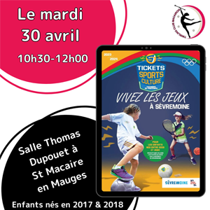

Découvrez les Activités pour Enfants à Sèvremoine
Quand ?
Les Tickets sports et culture reviennent du 22 avril au 3 mai 2024. Ils permettent aux enfants de 3 à 12 ans de découvrir 2 activités proposées par les nombreuses associations de Sèvremoine
Nous serons là !
Le Twirling Club Macairois sera présent le MARDI 30 AVRIL de 10h30 à 12h00, à la salle Thomas Dupouet de Saint Macaire en Mauges. L'occasion pour les enfants (filles et garçons) de 2017 et 2018 de s'initier au maniement du bâton.
Inscriptions
Les inscriptions seront ouvertes du 27 mars au 12 avril sur sevremoine.fr
Retrouvez dès à présent les modalités